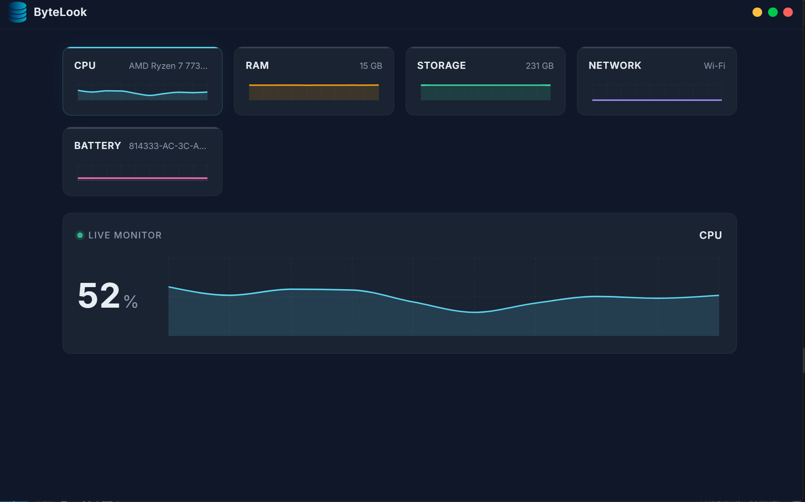

A lightweight, real-time system monitor for Windows. Track CPU, RAM, Storage, Network & Battery — all in one stunning dashboard.

Everything you need to understand your system at a glance.
Live charts updated every 500ms. Watch your system breathe in real-time with smooth, animated visualizations.
Built with Electron & React for native performance. Minimal CPU footprint so it never slows you down.
A stunning glassmorphic dark theme with vibrant accent colors. System monitoring has never looked this good.
Get native desktop notifications when CPU or RAM exceeds 90%. Stay ahead of performance bottlenecks.
Runs silently in your system tray. Access your dashboard instantly without cluttering your taskbar.
100% free and open source. Inspect the code, contribute features, or fork it for your own needs.
Track every critical resource on your machine in real-time.
Download ByteLook for free. No sign-up, no telemetry, no strings attached.
Download for WindowsWindows 10+ · 45 MB · v1.0.0
ByteLook Setup 1.0.0.exe is downloading. Run the installer to get started.